| ・ 修論発表リハーサル (H26.02.13) | |||
発表のリハーサルですが、研究背景と目的のトコロを重点的にみています。あとは目的と結論が一致しているか、修士論文の内容紹介になっているか等々。残りの細かい点は、月例報告会もやってきているし、学会発表もしてきたので自分で修正できるはず。 |
|||
|
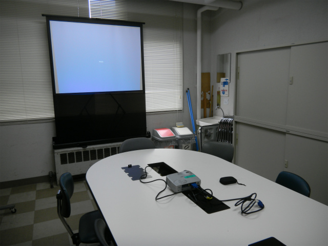
卒論・修論発表終わるまで何時でも練習できます |
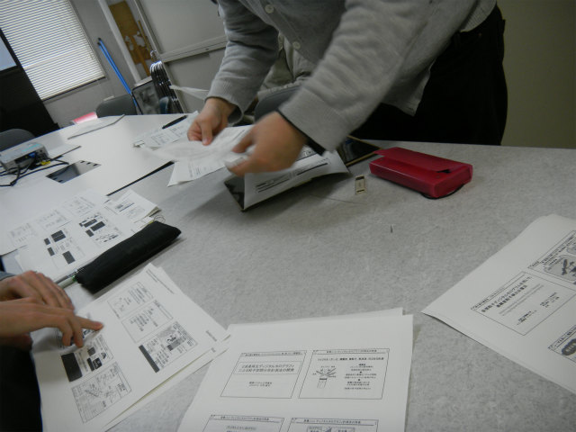
スライドのコピー配布 | ||
|
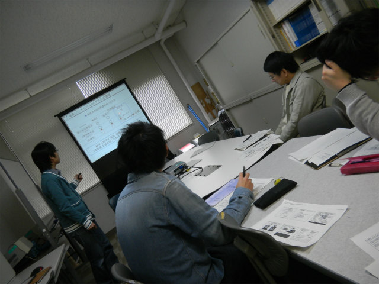
まずはK井くん |
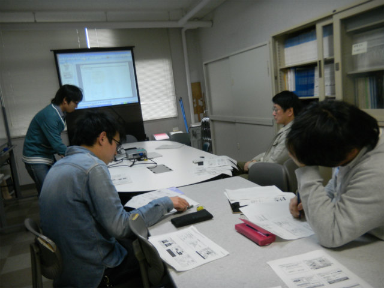
なんかまだしっくりしない | ||
|
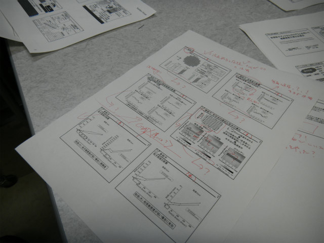
ちょっとだけ気になる所が |
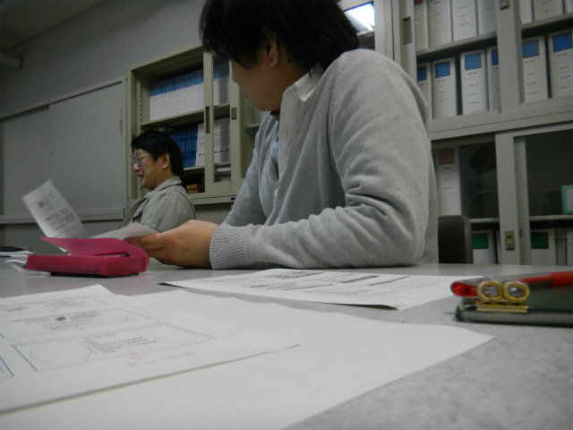
さて、次はオレの番 | ||
|
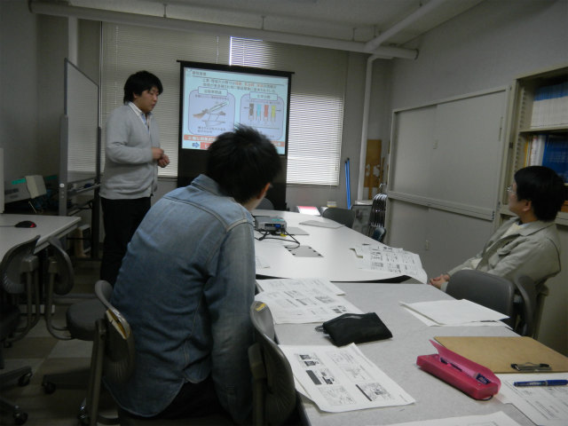
話し方上手いな |
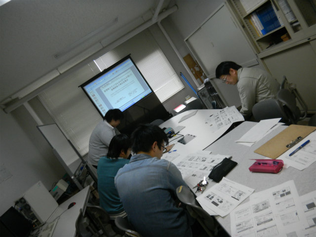
もう少しアルゴリズムの説明増やしてもいいのでは | ||
|
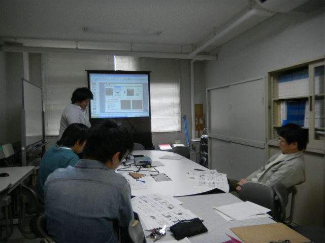
議論中 |
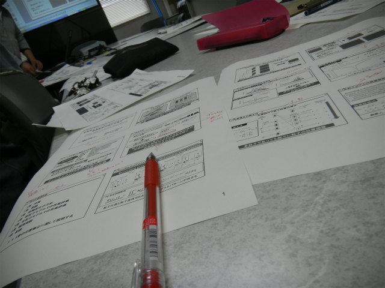
大筋はわかりやすいね | ||
|
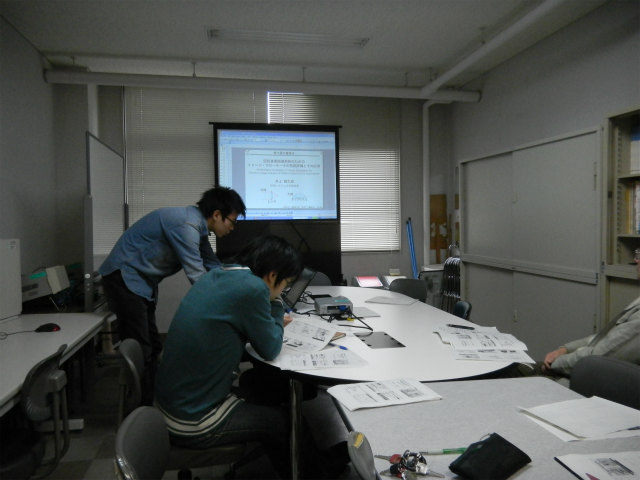
ZENなプレゼンとは何かを見せてあげよう |
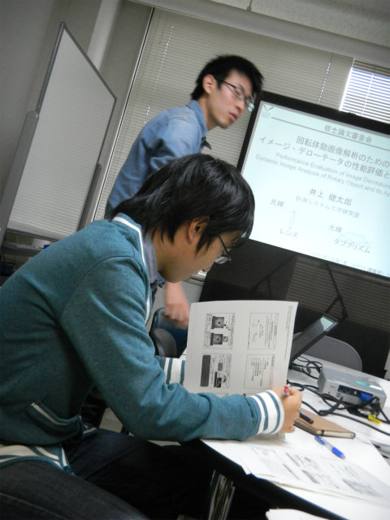
キビシイK井チェック | ||
|
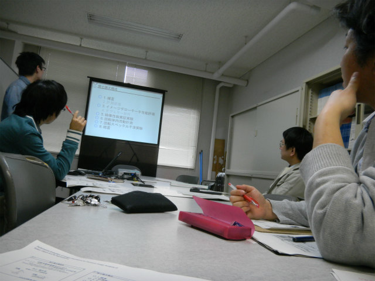
わかりやすい流れが出来てますね |
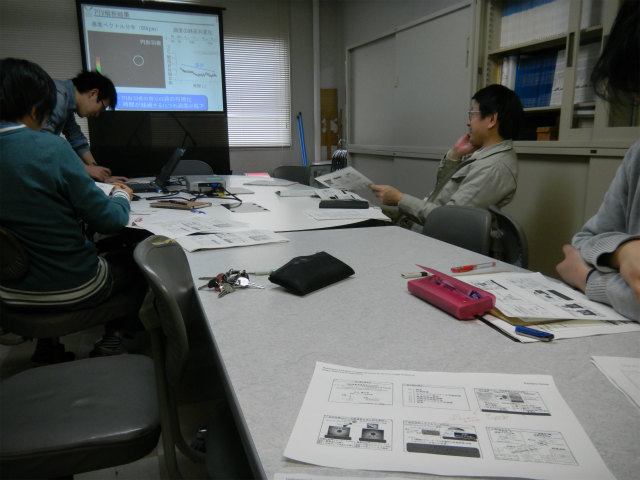
前の発表の図の方が良いかもね | ||
|
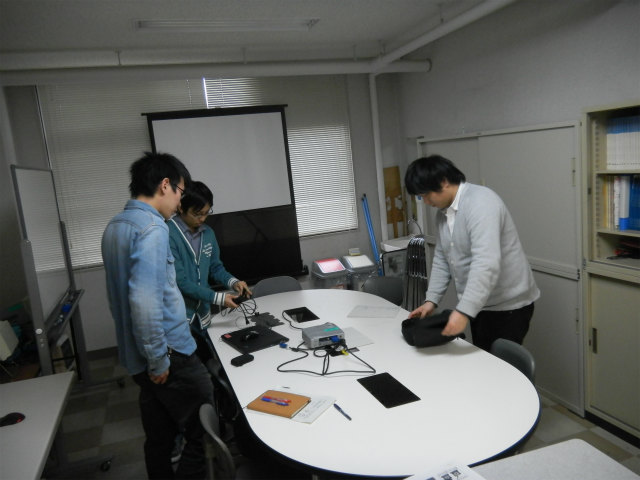
お互いのプレゼンを批評中 |
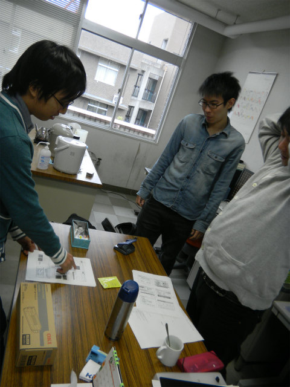
ほら、この辺とか | ||
|
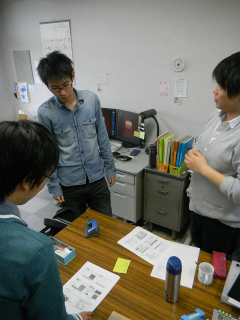
え、何だって？ |
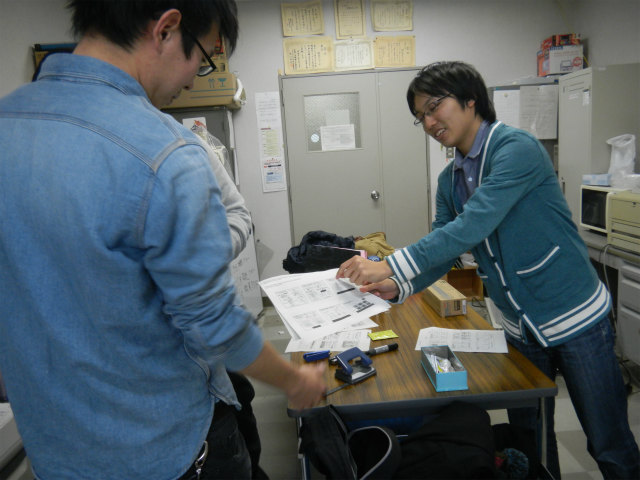
こ・こ・の・辺・と・かっ！ | ||